Animais Marinhos
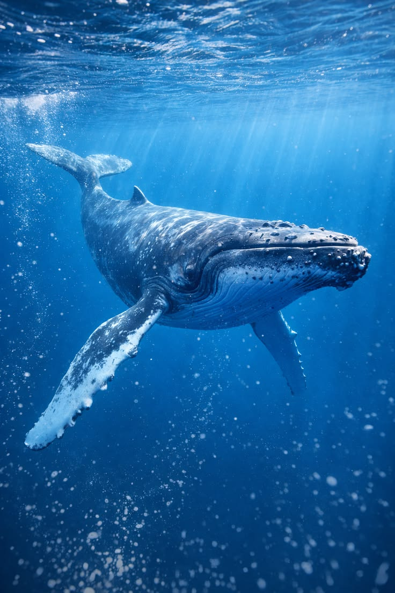
Baleia Azul
Balaenoptera musculus
Habitat: Oceanos de todo o mundo.
Alimentação: Krill e pequenos crustáceos.
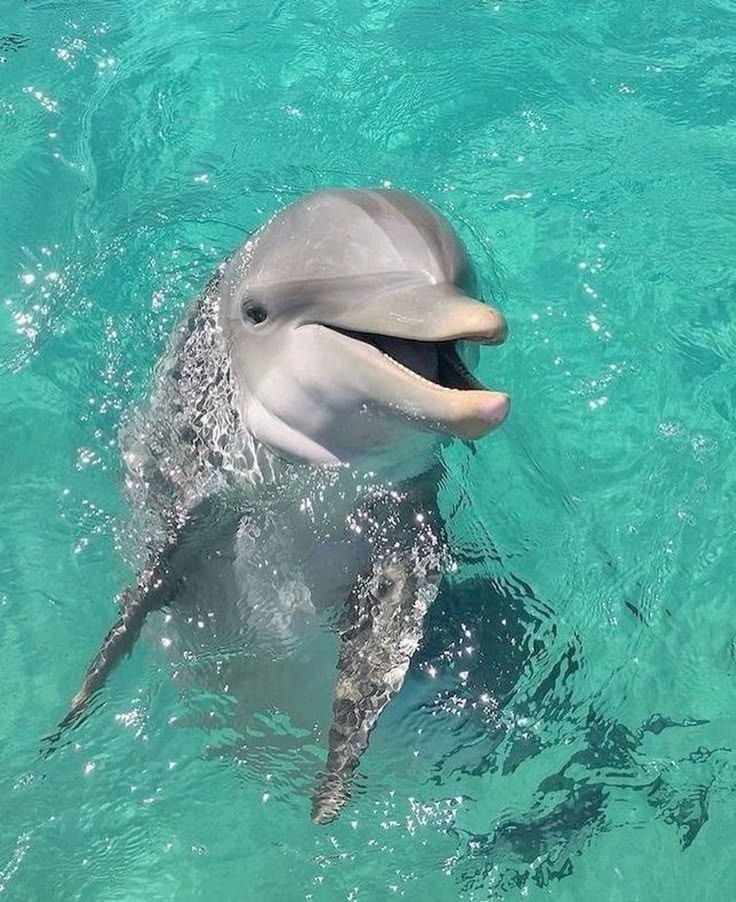
Golfinho
Delphinus delphis
Habitat: Águas temperadas e tropicais.
Alimentação: Peixes e lulas.
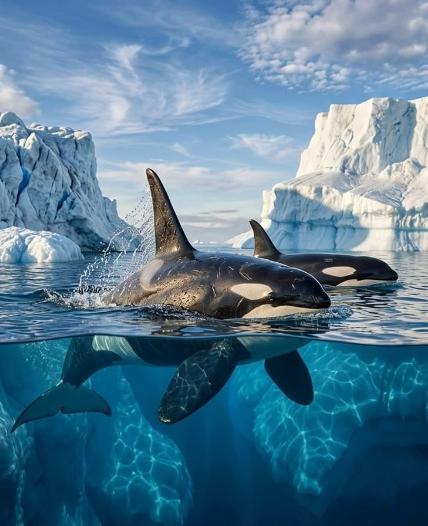
Orca
Orcinus orca
Habitat: Todos os oceanos.
Alimentação: Peixes, focas e até baleias.
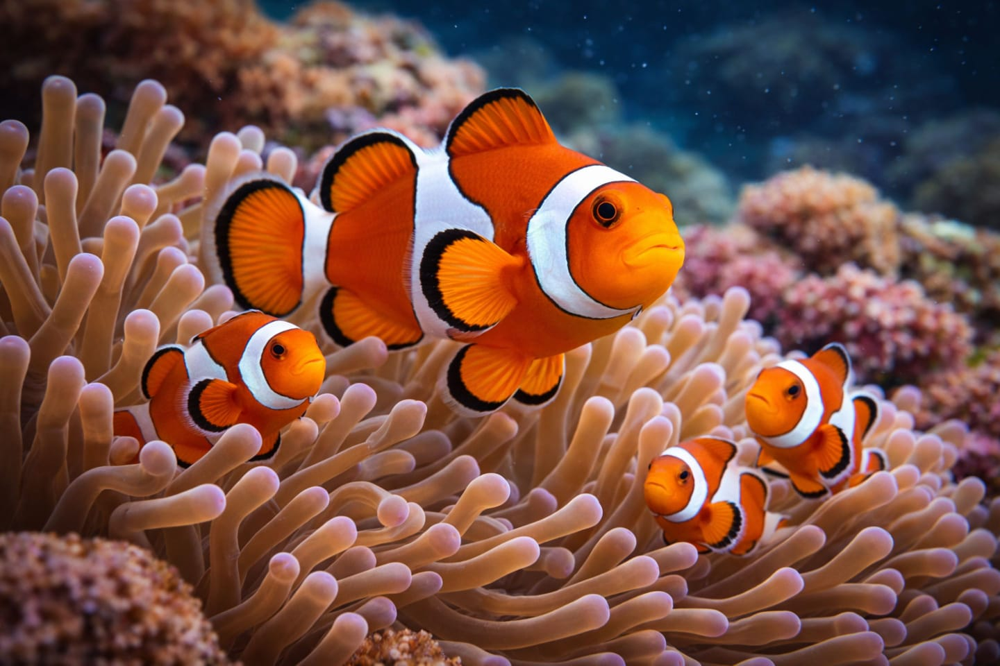
Peixe-Palhaço
Amphiprioninae
Habitat: Recifes de coral do Indo-Pacífico.
Alimentação: Algas e pequenos invertebrados.
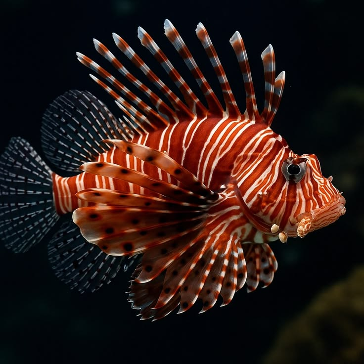
Peixe-Leão
Pterois
Habitat: Recifes de coral do Indo-Pacífico.
Alimentação: Peixes pequenos e crustáceos.

Atum
Thunnus
Habitat: Oceanos temperados e tropicais.
Alimentação: Peixes, lulas e crustáceos.
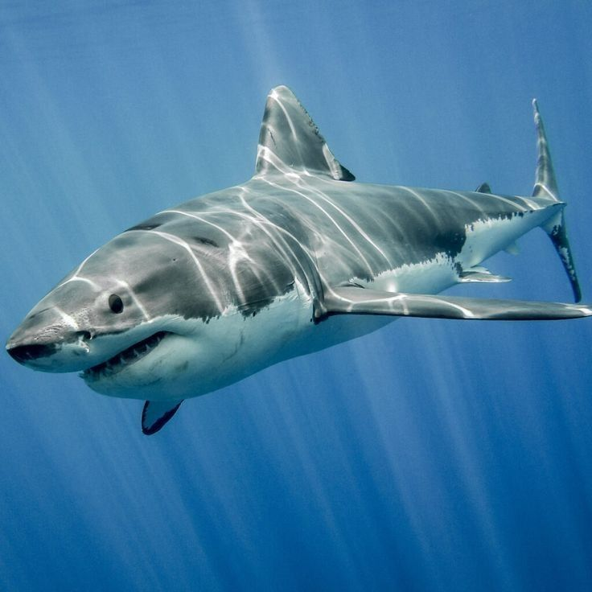
Tubarão-Branco
Carcharodon carcharias
Habitat: Águas costeiras de oceanos temperados.
Alimentação: Focas, leões-marinhos e peixes.
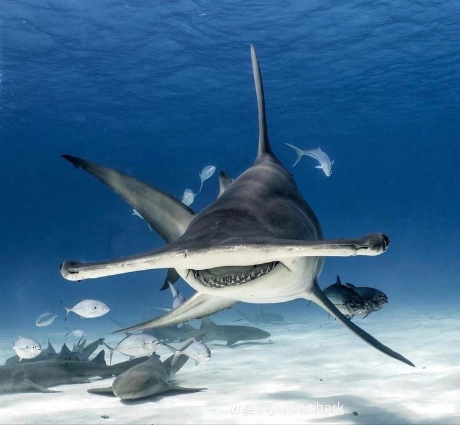
Tubarão-Martelo
Sphyrna
Habitat: Águas tropicais e temperadas.
Alimentação: Peixes, lulas e raias.
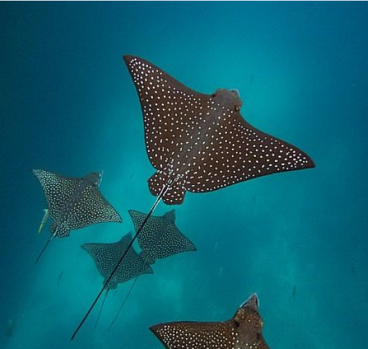
Arraia
Batoidea
Habitat: Fundos arenosos de oceanos.
Alimentação: Moluscos, crustáceos e peixes pequenos.
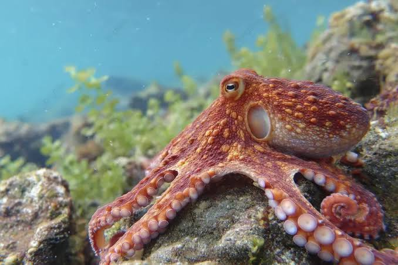
Polvo
Octopoda
Habitat: Fundos rochosos e recifes.
Alimentação: Crustáceos, peixes e moluscos.
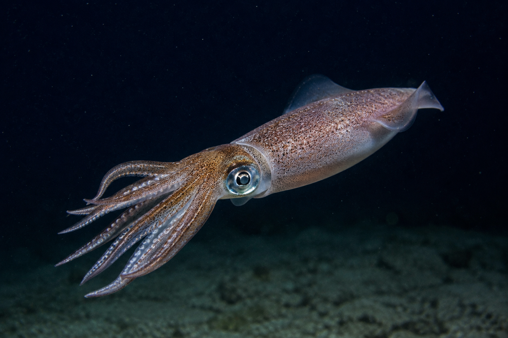
Lula
Loligo vulgaris
Habitat: Águas rasas e costeiras.
Alimentação: Peixes pequenos, crustáceos e outros moluscos.
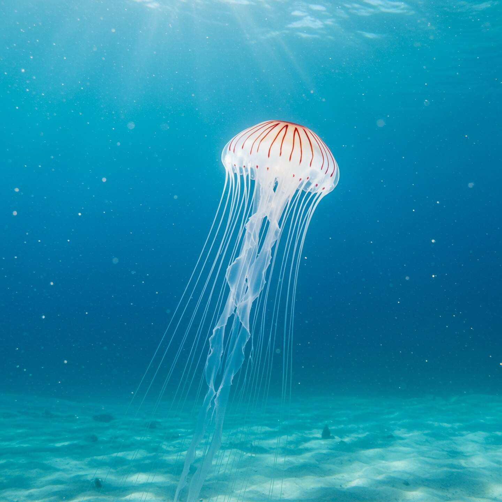
Água-viva
Medusozoa
Habitat: Oceanos de todo o mundo.
Alimentação: Plâncton, peixes pequenos e ovos.
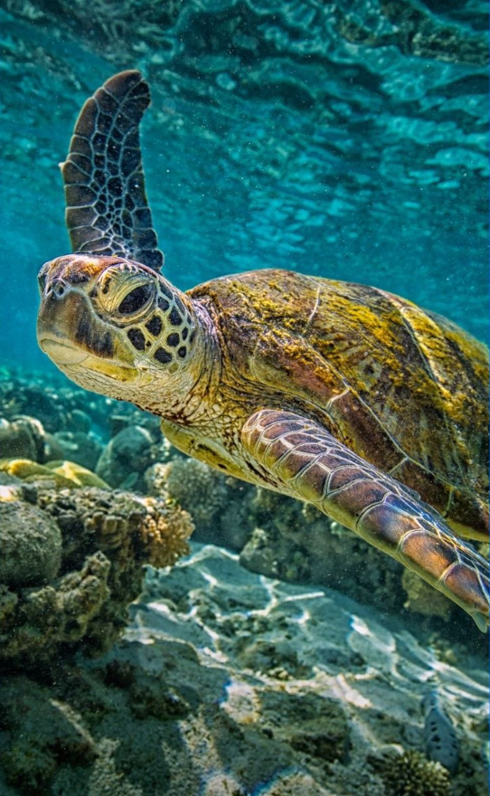
Tartaruga-Verde
Chelonia mydas
Habitat: Águas tropicais e subtropicais.
Alimentação: Algas marinhas e vegetação aquática.
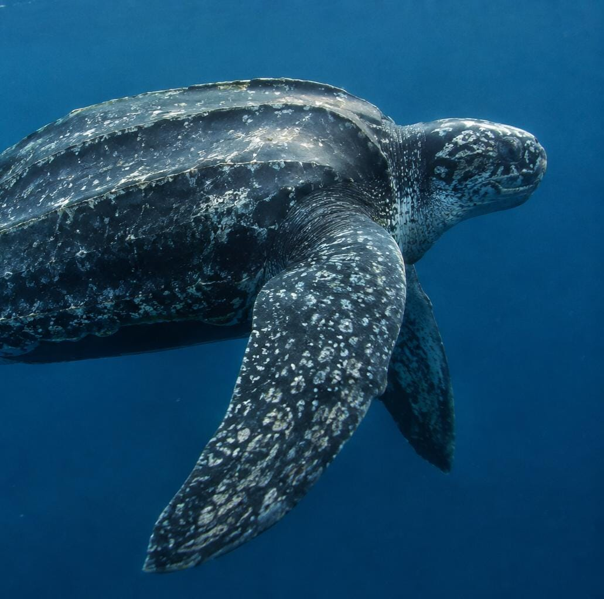
Tartaruga-de-Couro
Dermochelys coriacea
Habitat: Oceanos de todo o mundo.
Alimentação: Águas-vivas.
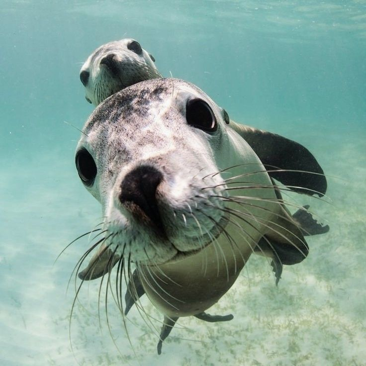
Foca
Phocidae
Habitat: Regiões polares, temperadas e tropicais.
Alimentação: Peixes, lulas e polvos.
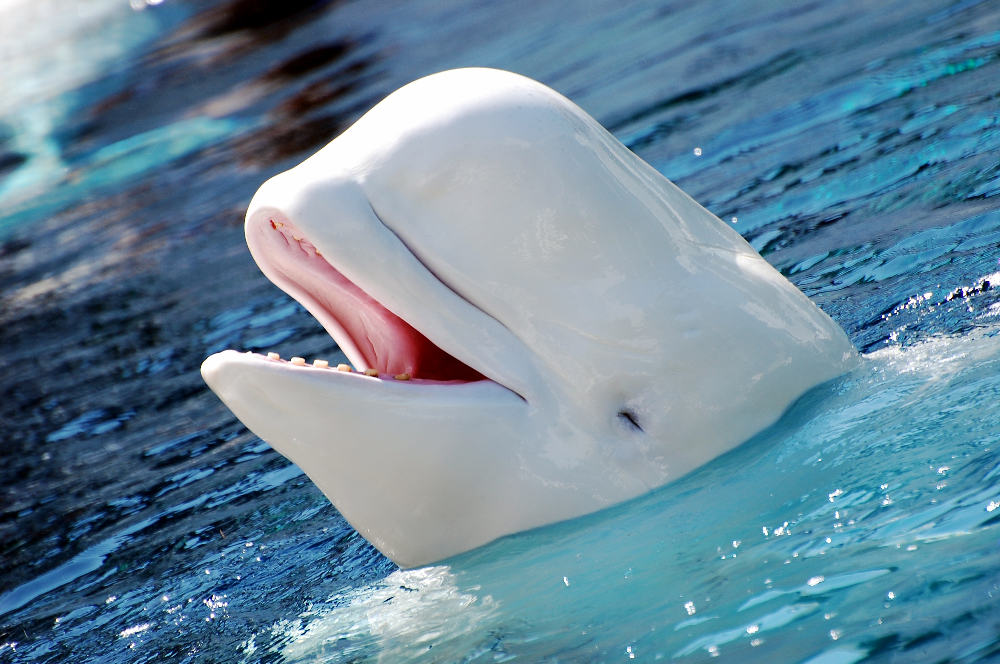
Baleia Beluga
Delphinapterus leucas
Habitat: Águas frias do Ártico e subártico.
Alimentação: Invertebrados marinho, peixes e Carnes.
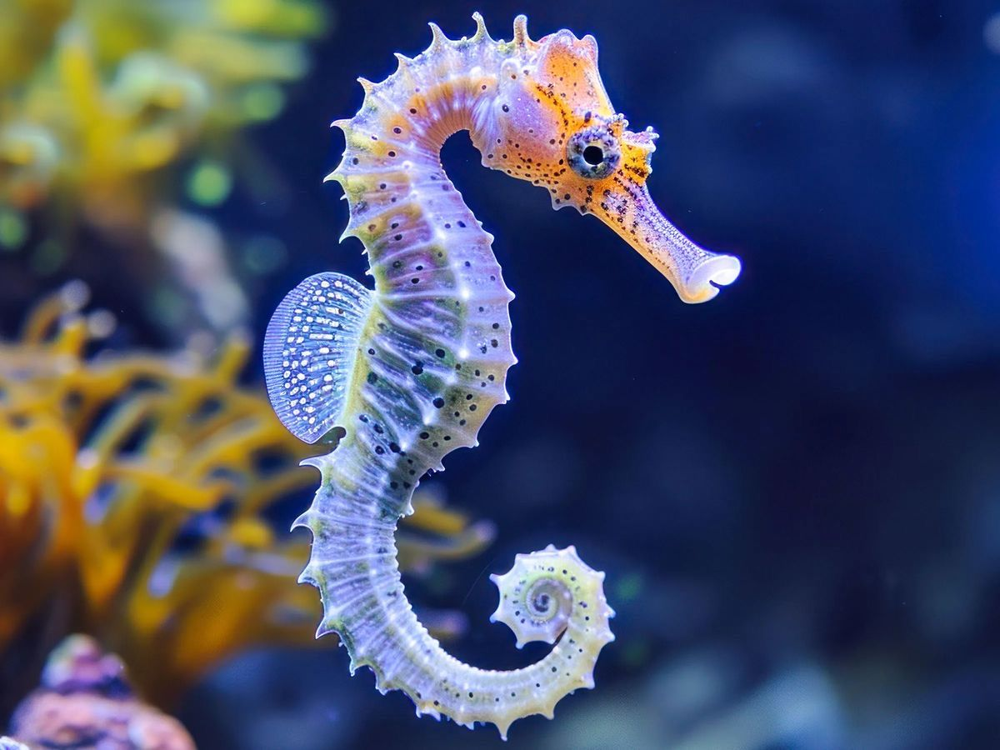
Cavalo-Marinho
Hippocampus
Habitat: Águas quentes perto da costa.
Alimentação: Pequenos crustáceos e plâncton.
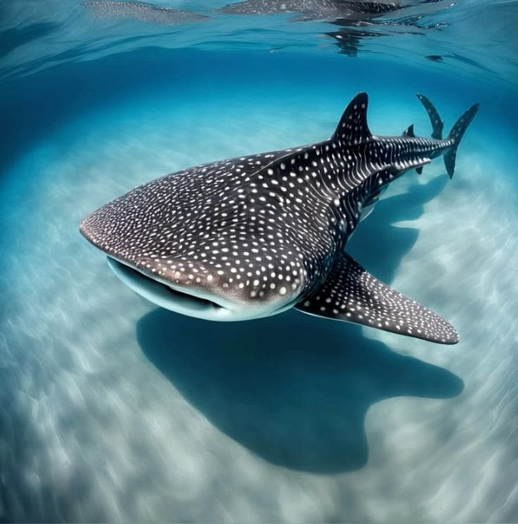
Tubarão-baleia
Rhincodon typus
Habitat: Águas tropicais e subtropicais.
Alimentação: Plâncton, krill e pequenos peixes.